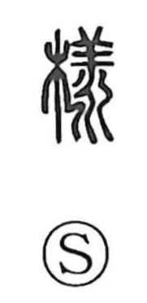

様

Uncategorized
Kun: sama | On: yo
appearance ・ manner ・ form ・ honorific suffix
Explanation
Originally written 樣, this is a phono-semantic character: 木 “tree” supplies the semantic base, while the phonetic 羕 (yo)—denoting water that drifts and flows on in a long vein—gives the sound. The idea is of water-like lines traced in wood grain, which naturally suggests a pattern or outward aspect. From this image come meanings such as form, mode, and appearance, seen in compounds like 樣式 (form, style) and 様子 (state, appearance). In Japanese it also reads sama, used after names as a respectful title equivalent to “Mr., Esq.”